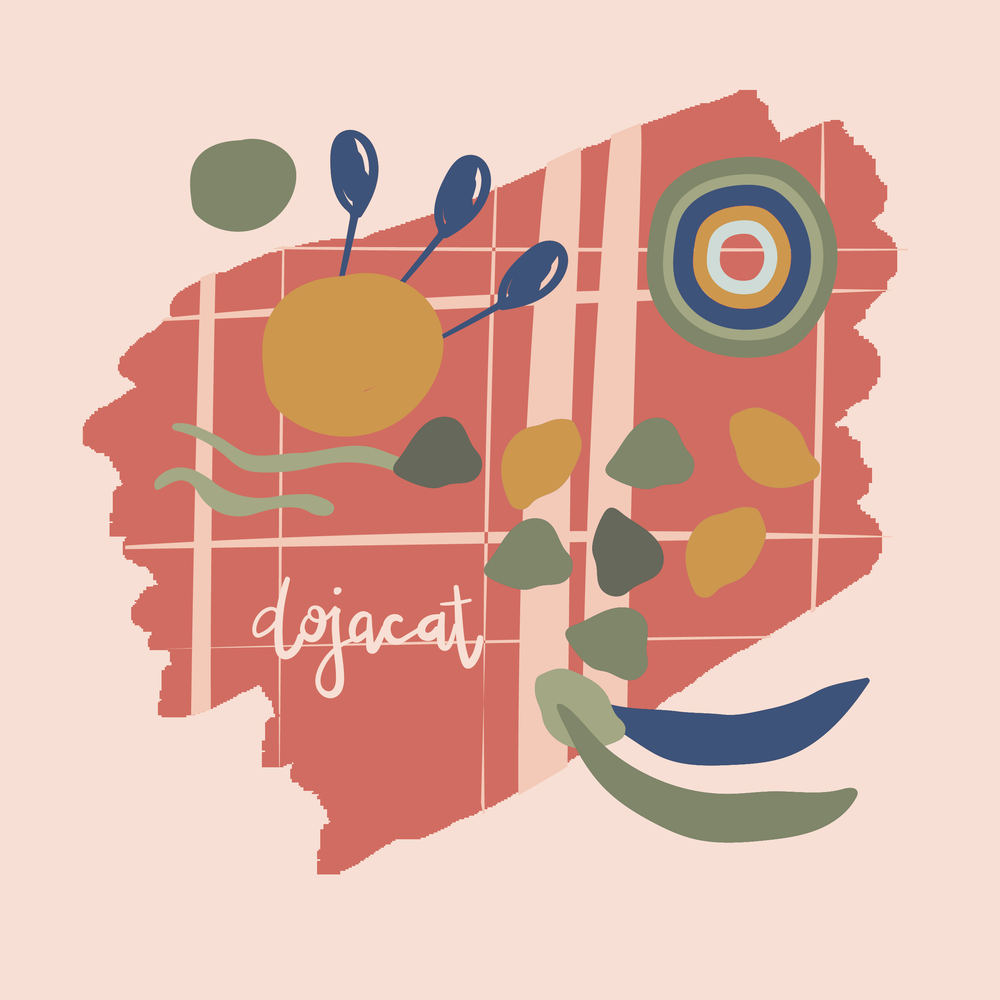

ARTS 486
Computer Graphics
Project 1: As We May Rethink
Project 1, Part 1: Functional Specification
Some sketches for the "Camera of the Future."
Scope
The purpose of the “Camera of the Future” is to make the photographic process more seamless and inconspicuous. This device is an attempt on a faster and more accurate process of taking and viewing photographs, by compression, and reduction of record and viewing through projection instead of directly. Deliverables will include a digital mock-up of the camera and glasses, as well as a magazine advertisement including this device.
Solution Overview
This device attempts to solve the issue of a slow and complicated process of the current photographic process. By incorporating concepts of micro-photography and dry photography, the camera is able to reduce the size of the record and stores images that can be projected in a later process.
The main function of this camera is to take photos in plain sight. The camera will be placed inside the bridge on a pair of glasses where it is out of the way of ordinary vision. The camera is small: approximately the size of a hex-nut. Inside the hex nut is a photocell that adjusts exposure for a wide range of illumination. In the temple of the glasses is a photo button. A quick push of the button takes the photo, and without a sound, a photo record has been made. A white light indicates whether the photo was successfully taken. The glasses contain a memory card, which is stored inside the temple, and can be extracted to produce results in full color, to be seen in 2 ways: on a digital screen or as a projection.3. Use Cases
To take the photo, the user:
1. Checks battery for the green light: ready to use signal
2. Wears glasses
3. Locates subject and determines composition of photo
4. When ready, presses photo button
5. Watch for white light indicator upon successful photo taking
6. Takes Picture, to be viewed during projection or digital screen in full color
To charge the camera, the user:
1. Checks battery for green or orange light
2. Upon indication of orange light, plugs Micro-USB into glasses port located on temple
3. Plugs USB into charger and into outlet
4. Charges device until indication of green light: ready to use signal
To view photo, the user:
1. Slides out memory card from memory card slot
2. Inserts memory card into memory card reader
3. Either Views on digital screen OR on projector
4. Once memory card is full, saves pictures onto hardware, and deletes pictures on memory card
5. Inserts memory card back into memory card slot
Non-Functional Requirements
Adding personal style and touch to glasses through different lens styles, such as clip on lens to go from ordinary glasses to sunglasses.
Project 1, Part 2: User Flow
"Using design to explore the imagined devices of “As We May Think,“ we worked toward a deeper understanding of the effort behind augmenting humanity with science and technology initially proposed by Vannevar Bush."
User Flow Diagram for Three Specific Functions of the Camera
Project 1, Part 3: Device Illustration
Inspired by the design guidelines of Bush, I created an imaginary product with a convincing marketing copy in the form of a magazine ad. My interpretation of "The Camera of then Future" focuses on simplicity and functionality, and takes the form of a pair of glasses, in which a small camera, the size of a hexnut, is placed within the frame.

Sketches developed on Adobe Illustrator

Project 1, Part 3: Magazine Advertisement
"For this project, we designed a full color magazine ad for our chosen device based on the article "As We May Rethink." We situated the illustration created for this device into a magazine ad. We wrote a convincing marketing copy that explained what the device is, how it works, and why someone may chose to integrate it into their life. Work up an appropriate type hierarchy, and use solid, effective typography to help sell the idea."
Project 2: Transcoding Data
Project 2, Part 1: Questionaire
"For this project we developed a process that visually transcodes responses from a simple survey into well designed, structured, visual composition. Essentially, a data visualization of responses from a questionnaire. This project consisted of three parts: Questionnaire, Composition, and Data Visualization."

Project 2, Part 2: Composition + Data Visualization
As artists, we contribute to society and add value to the world through our artwork. During this time of crisis, we have a unique opportunity to use our creativity as an instrument of change. In my effort to give back to the community and connect with friends and family during this time of social distancing, I used this interactive project to collect data and translate it into something meaningful. Thanks to Prof.Lahoda and his sister in law who supplied the ingredients, these designs were transformed from an idea into a real life product: personalized hand sanitizers that were mailed out to participants.
